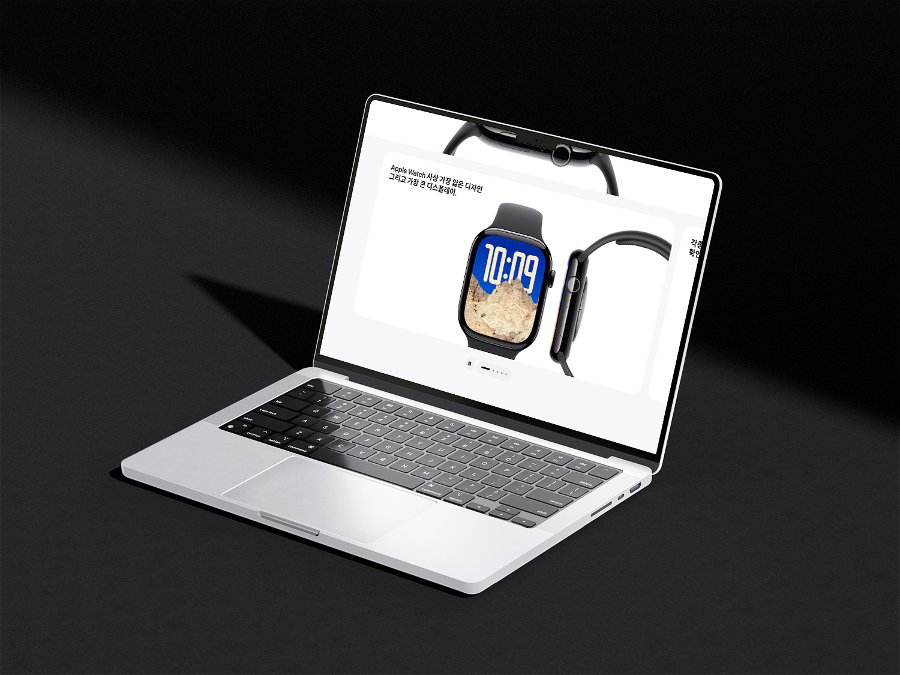

Apple 제품 라인업을 새롭게 재해석한 웹 리디자인 프로젝트입니다.
Apple 특유의 미니멀리즘은 유지하되, 각 제품의 특성에 맞는 시각적 개성을 더하는 방향으로 접근했습니다. iPhone, MacBook, Watch, AirPods Max 등 주요 제품 페이지를 독립적인 비주얼 언어로 구성했습니다.



Process
01
Analysis
애플 기존 사이트 구조 및 UX 분석. 미니멀리즘을 유지하면서 각 제품의 개성을 더할 포인트를 찾았습니다.
02
Concept
제품별 비주얼 언어 재정의. iPhone의 색감, MacBook의 세련미, Watch의 정밀함을 각각 다른 방식으로 표현했습니다.
03
Layout
미니멀 그리드와 여백 시스템 설계. 제품 이미지가 최대한 돋보이도록 화이트 스페이스를 전략적으로 배치했습니다.
04
Refinement
제품 페이지별 독립 아이덴티티 완성. 전체 일관성을 유지하면서 각 제품의 고유한 비주얼 언어를 마무리했습니다.